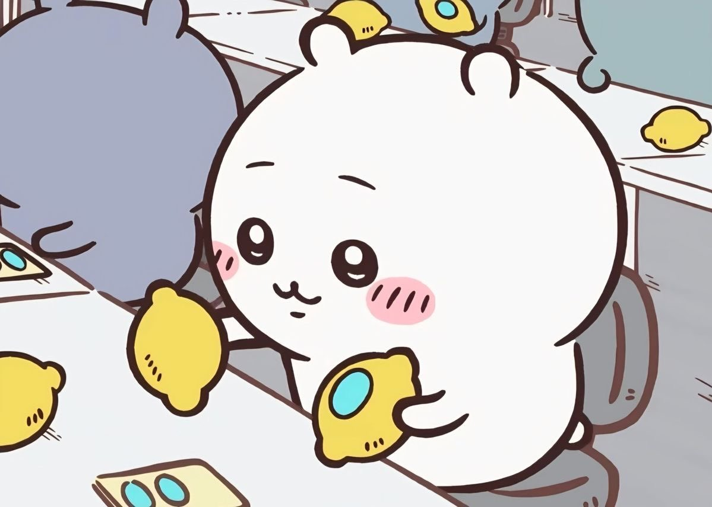
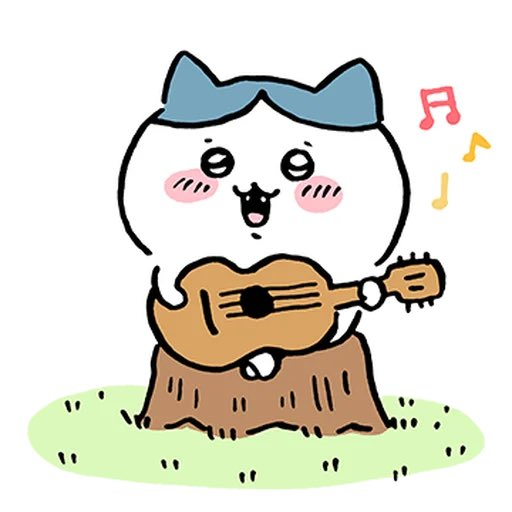
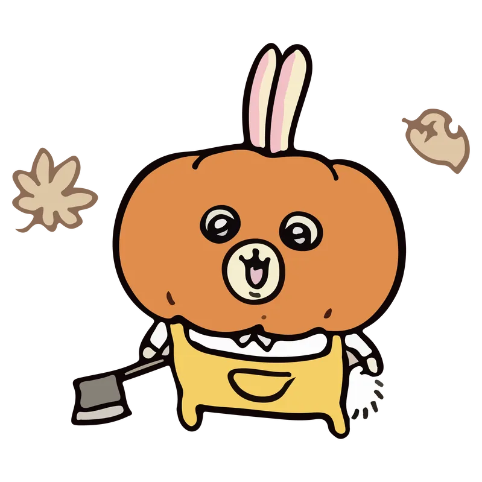

Interesting Facts
Here you can find some interesting facts about our favorite things:
- Chiikawa started as a Twitter webcomic in 2020.
- Chiikawa became an animated series in 2022.
- The first feature-length film in the Chiikawa franchise released in 2026!
- In the world of Chiikawa, characters have to work manual labor jobs to survive. Is this series a critique of capitalism?!
Chiikawa
- Hates broccoli and pickles!
- Loves sweets, especially the sweet and sour fruits!
- Studying hard to pass the weeding license exam!

Hachiware
- Loves music and often plays the guitar.
- Is cheerful and encourages others, even when feeling down.
- Overthinks a lot but still hopes for a better tomorrow.

Usagi
- Communicates mostly in screams!
- Is fearless and jumps into action without hesitation.
- Has a wild, unpredictable personality and lots of energy.
